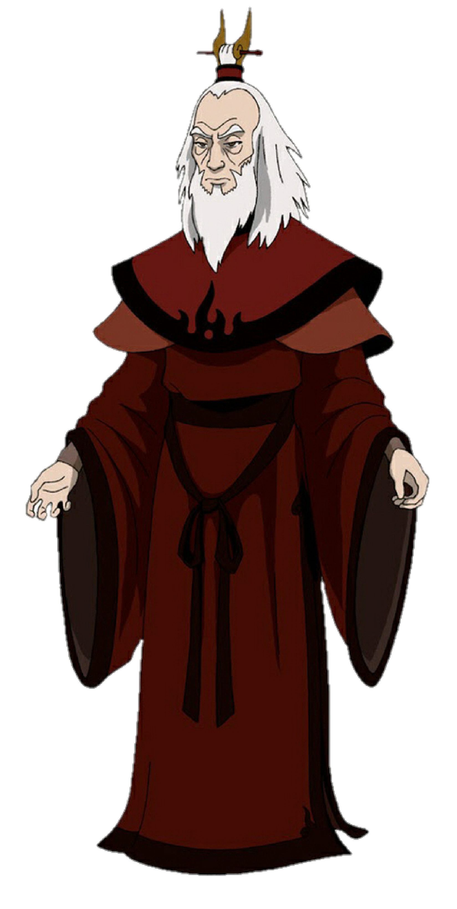

-
Avatar Wan
Wan is a significant figure in the lore of the Avatar world. He was the first human to become the Avatar, a being capable of bending all four elements: water, earth, fire, and air. Wan lived during a time when humans and spirits were separated by a barrier. He initially only possessed the ability to firebend and lived in a world plagued by the rule of a tyrannical firebending overlord. When Wan inadvertently acquired the power of the other elements, he used his newfound abilities to challenge the oppressive rule of the firebending lord. Through his adventures, Wan sought to bring balance to the world and restore harmony between humans and spirits. His actions led to the creation of the Avatar cycle, where the spirit Raava fused her essence with Wan, allowing him to be reborn in subsequent generations as the Avatar, bridging the gap between the human and spirit worlds. Wan's story is revealed in "The Legend of Korra" in a two-part special episode called "Beginnings," which provides insight into the origins of the Avatar and the profound impact Wan had on the world. His legacy as the first Avatar and his mission to maintain peace and balance continued to influence the Avatar world for generations to come.
-
Avatar Yangchen
Yangchen was known for her wisdom, strength, and unwavering commitment to maintaining peace and balance in the world. She held the position of Avatar during a tumultuous time, marked by conflicts between humans and spirits. Despite the challenges, Yangchen's leadership was instrumental in keeping the balance. One of Yangchen's most significant achievements was her role in mediating disputes between humans and spirits. She believed in a strong stance against the spirits when necessary to protect the human world, but she also recognized the importance of maintaining a connection with the spirit world. She passed down her knowledge and wisdom to the next Avatar, Aang, who would face his own unique challenges. Yangchen's legacy as an Avatar who successfully upheld balance and peace left a lasting impact on the world and set a high standard for her successors to follow.
-
Avatar Kuruk
Kuruk's time as the Avatar was marked by a period of relative peace and prosperity, allowing him to focus on enjoying a carefree lifestyle. However, his reign was also marred by the emergence of a significant threat—the dark spirit known as Koh the Face Stealer. Koh's actions resulted in the loss of Kuruk's wife, which deeply affected him. Despite the personal tragedies he faced, Kuruk maintained a sense of humor and casual demeanor. He was known for his relaxed approach to his duties, often believing that there was little for an Avatar to do during a time of peace. Kuruk's legacy serves as a cautionary tale about the responsibilities of an Avatar and the need to remain vigilant, even during times of apparent tranquility. His story is a reminder that the world can change suddenly, and an Avatar must always be prepared to fulfill their duty in maintaining balance and peace. Avatar Aang, his successor, learned from Kuruk's experiences and took his responsibilities more seriously in response to the challenges he faced.
-
Avatar Kyoshi
Kyoshi is renowned for her strength, determination, and unwavering commitment to maintaining peace and balance in the world. She lived during a time when the Earth Kingdom faced threats and upheavals, and she played a pivotal role in its defense. One of Kyoshi's most significant accomplishments was the creation of Kyoshi Island, a safe haven for her followers. She was also responsible for separating Kyoshi Island from the mainland to protect it from external threats. Her decision to do so resulted in the formation of a canal known as Kyoshi's Spine. Kyoshi is perhaps best known for her involvement in the foundation of the Kyoshi Warriors, a group of highly skilled female warriors dedicated to defending their homeland. These warriors became famous for their martial prowess and distinctive appearance, including their face paint. Kyoshi's legacy as an Avatar who took bold and resolute actions to ensure peace and stability left a lasting impact on the world. Her commitment to the Earth Kingdom and her formidable abilities earned her a revered place in the history of the Avatar world, and her story continues to influence future Avatars.
-
Avatar Roku
Roku was a Fire Nation native who became the Avatar during a time of great political and social change. He was close friends with Prince Sozin, who later became the Fire Lord, but their friendship soured as Sozin's ambitions for expanding the Fire Nation's influence grew. This led to a conflict that would have a profound impact on the world. One of Roku's most significant moments was when he confronted Sozin about his plan to conquer the other nations, which marked the start of the Hundred Year War. Although Roku was a formidable bender, he was unable to stop Sozin, and the war began. Roku's story is one of personal sacrifice and determination. He spent much of his life trying to maintain peace and balance, and he continued to guide and mentor Aang from the Spirit World after his own physical death. His guidance was crucial in helping Aang navigate the challenges of his time and ultimately defeat the Fire Lord Ozai, ending the Hundred Year War. Roku's legacy is one of a wise and powerful Avatar who tried his best to uphold his duty and bring harmony to the world. His actions and the lessons he imparted to Aang had a profound impact on the fate of the Avatar world.
-
Avatar Aang
Aang was an Airbender and the last of his kind, known as the Air Nomads, due to a genocide committed by the Fire Nation during the Hundred Year War. He was discovered frozen in an iceberg by siblings Katara and Sokka, who then became his close friends and traveling companions. As the Avatar, Aang possessed the unique ability to bend all four elements: water, earth, fire, and air. His primary mission was to restore balance to the world and bring an end to the war that had been raging for a century. Aang's journey was characterized by personal growth and the challenges he faced in mastering the bending of the four elements. He was guided by his past lives, including Avatar Roku and Avatar Kyoshi, who provided wisdom and insight. Aang's strong sense of morality and his desire to resolve conflicts without violence made him a unique and inspiring Avatar. Throughout the series, Aang sought to find a peaceful resolution to the conflict, even with the ruthless Fire Lord Ozai. Ultimately, Aang learned to master all four elements and, with the support of his friends, allies, and a deep connection to the spirit world, he confronted Ozai and brought an end to the war. Aang's life was one of responsibility, sacrifice, and personal growth as he transformed from a carefree and playful child into a wise and capable Avatar, fulfilling his destiny to restore peace and balance to the world. His character and journey are central to the themes of the series, emphasizing the importance of empathy, understanding, and the pursuit of peace in the face of conflict.
-
Avatar Korra
Korra was born in the Southern Water Tribe and discovered as the Avatar at a young age. She was a spirited, headstrong, and powerful bender who could bend water, earth, and fire. Unlike her predecessor, Aang, she didn't struggle with mastering these elements. However, her training in airbending presented a significant challenge. As the Avatar, Korra's primary mission was to maintain balance in a world that had made significant technological and societal advancements since Aang's time. She faced a variety of adversaries and challenges, including a group of anti-bending revolutionaries known as the Equalists and a powerful and complex antagonist, Zaheer. Throughout the series, Korra's journey was one of self-discovery, personal growth, and facing both external and internal struggles. She learned to be a diplomat as well as a warrior, often trying to find peaceful solutions to conflicts. Her story highlighted themes of identity, resilience, and the evolving role of the Avatar in a changing world. Korra's life was marked by her strength and determination, and she faced numerous trials in fulfilling her role as the Avatar. Her character exemplifies the complexities and responsibilities of being the bridge between the human and spirit worlds and working to bring balance and harmony to a world that was rapidly changing.
a journey through the reincarnations of the avatar

- 